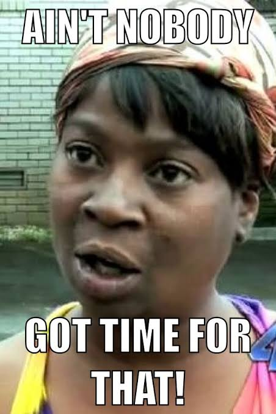

— title: “November Goal Setting” date: “November 1, 2026” —“Ain’t Nobody Got Time for Dat”
The theme of the month is that if there is not a direct connection between my degree or teaching progress, I do not have time for it. Get somebody else to do it.
October Goal Recap
I set three goals for October that will be adjusted and moving forward with me into November. I have broken down each goal into its milestones and briefly recapped the progress below.
Goal 1: BioMeth Manuscript to Steven and Alison
- Goal milestone description: All written sections (n = 5), figure recreation and captioning, and supplementary file list development.
- Total number of milestones: 7
- Milestones met: 1 (introduction drafted)
Goal 2: Teaching 302
- Goal milestone description: Learn material, develop and deliver lectures (n = 8), grade within 48 hours (n=4), weekly canvas improvement (n = 4), meet with lubna for 1v1s, maintain office hours (n=4) two times per week
- Total number of milestones: 20
- Milestones met: 18 (lubna, learn material, lectures-8, grades-2, canvas-3, OH-3)
Goal 3: Degree Progress
- Goal milestone description: Form and submit PhD committee forms, schedule and deliver Autumn committee meeting, confirm ability to schedule written exam, define expertise for each committee member (n=4), schedule 1v1’s for mid-nov to check-in (n=5), submit plan of study milestone to SAFS, schedule written exam for December 14-18 via milestone form.
- Total number of milestones: 11
- Milestones met: 9.5 (committee, meeting, expertise, confirm moving to writtens, 1v1s scheduled, Plan of Study under review)
Reflection & Next Steps
I made strong progress in both the teaching and degree progress goals, and significantly less in the manuscript goal. Both of the first goals require significantly more engagement and preparation with others to be completed, and I prioritized ‘unblocking’ the tasks or content others needed over the manuscript work.
Goal 1: Manuscript Writing
The manuscript progress is less than I anticipated and I believe that is because I spent too much time task switching between milestones. I have reworked the narrative arc - shifting the context around the methylation work from a ‘pilot’ to a planned extension, I’ve noted on the original figures for both manuscripts what can be enhanced, removed, or completely reworked, and I have a starting list for the supplement. While none of these alone complete their respective milestones, the progress is real. Moving forward, I have dedicated specific working blocks to each milestone, added them to my working calendar across November, and dropped a 2-week check-in reminder to myself to assess progress more regularly.
Goal 2: Teaching
Since I am teaching the 302 content for the first time, I spent much more time understanding the material and developing lectures to ensure I am connecting the content to the larger learning objectives. After a month of engagement with the content and the class and my weekly meetings with Lubna, I feel solid in my understanding and delivery. Pivoting to November, I will not need to spend as much time on content or lecture building, so this goal will be adapted to reflect that change.
Goal 3: Degree Milestone Progress
This goal is perhaps the most ‘logistically’ defined goal of the group. Because there are specific departmental processes and timelines and faculty schedules are challenging, this is one I did not want to procrastinate on if I plan on graduating before the next century! While most milestones are completed, this goal will carry into November as a sub-goal of preparing for my written exam.
November Goals
Goal 1: BioMeth Manuscript to Steven and Alison
- Goal milestone description: All written sections (n = 5), figure recreation and captioning (n=5), and supplementary file list development and curation (n=2).
- Total number of milestones: 12
- Milestones met: 0
Goal 2: Teaching 302
- Goal milestone description: Maintain grading within 48 hours (n=4), weekly canvas improvement (n = 4), meet with lubna for 1v1s (n=3), and implement midterm eval suggestions for improvement (n=2)
- Total number of milestones: 13
- Milestones met: 0
Goal 3: Written Exam Preparation & Degree Progress
- Goal milestone description: Maintain weekly reading and writing plan (n=8), make a weekly synthesis post to support the discipline connections across my dissertation (n=4), submit plan of study milestone to SAFS, schedule written exam for December 14-18 via milestone form (n=2).
- Total number of milestones: 14
- Milestones met: 0